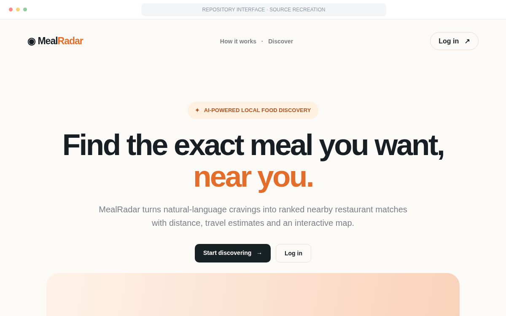

PROJECT / CASE STUDY
Project

01 / THE CHALLENGE
What problem does it solve?
02 / THE APPROACH
From idea to implementation.
03 / REPOSITORY & SOURCE
Explore the work.
KEEP EXPLORING
View the next project ↗PROJECT / CASE STUDY

01 / THE CHALLENGE
02 / THE APPROACH
03 / REPOSITORY & SOURCE
KEEP EXPLORING
View the next project ↗